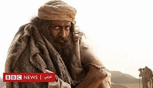

استشهد 10 أشخاص من عائلة رئيس المكتب السياسي لحركة المقاومة الإسلامية (حماس) إسماعيل هنية، بينهم شقيقته، في قصف إسرائيلي استهدف منزلهم في مخيم الشاطئ غرب غزة الليلة الماضية، في وقت أقر فيه الاحتلال بمسؤوليته عن الغارة.
وذكرت وسائل إعلام فلسطينية أن عددا من أفراد عائلة هنية الذين كانوا في المنزل لا يزالون تحت الأنقاض، وأكدت أن جل الشهداء الذين قضوا في الغارة الإسرائيلية من النساء.
وأفاد مراسل الجزيرة بأن محاولة البحث عن ناجين مستمرة، مرجحا ارتفاع أعداد شهداء الغارة التي استهدفت منزل هنية.
ومنذ الليلة الماضية، يكثف جيش الاحتلال غاراته على مخيم الشاطئ، كما استهدف مدرسة إيواء تابعة لوكالة غوث وتشغيل اللاجئين الفلسطينيين (أونروا)، مما أدى لاستشهاد العشرات، بينهم أطفال
فلم حياه الماعز

حياة الماعز (بالماليالامية: ആടുജീവിതം، تُقرأ: آدوجيفيتام) (بالإنجليزية: The Goat Life) هو فيلم درامي هندي من صنف أفلام البقاء على قيد الحياة، صدر باللغة الماليالامية في مارس 2024، كتبه وأخرجه وشارك في إنتاجه بليسي. الفيلم إنتاج دولي مشترك يضمّ شركات في الهند والولايات المتحدة، أما سيناريو الفيلم فمقتبس من رواية أيام الماعز الأكثر مبيعًا لعام 2008 بقلم الروائي الهندي بنيامين مع بعض التغييرات والحبكة الدرامية، الرواية تستند إلى قصة حقيقية لعامل مالايالامي من ولاية كيرلا جنوب الهند يُدعى «نجيب محمد»، جرى استغلاله وتعرّض لظروف صعبة ومريرة واُجبر على رعي الغنم في منطقة صحراوية ومعزولة بعد قدومه للسعودية انتهت أخيرًا بهروبه
اقرأ المزيد
أضف تعليقك